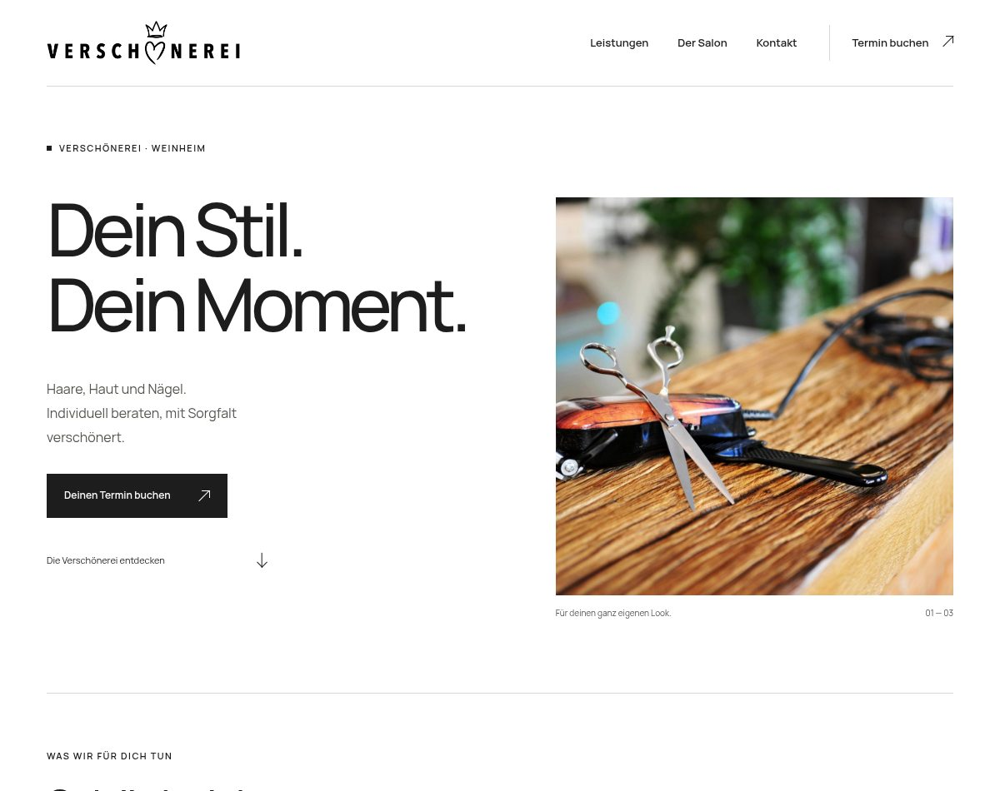
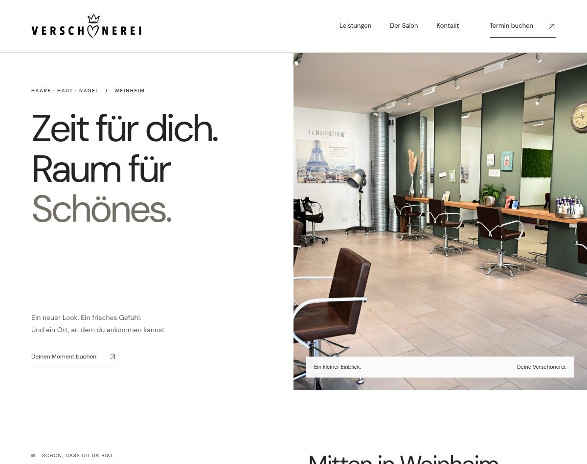
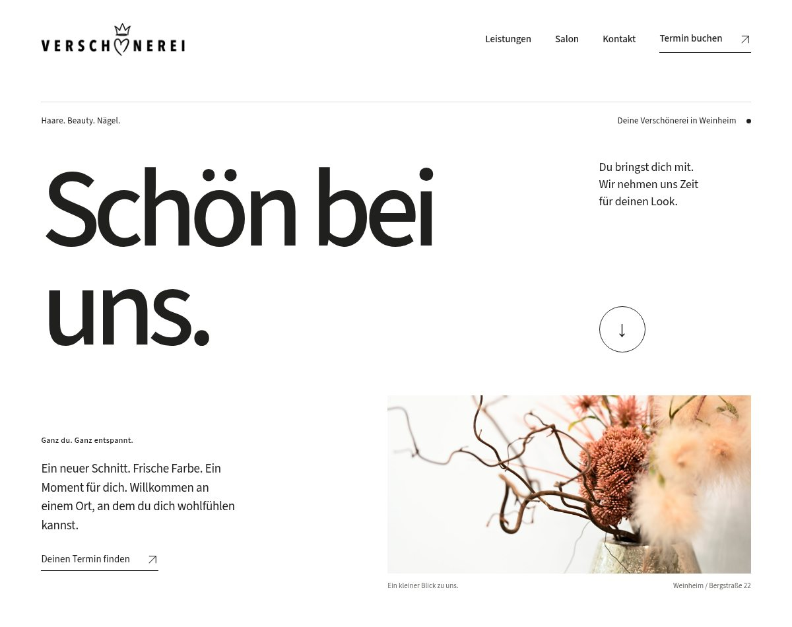

Entwurf ansehen01BILDBETONT & REDAKTIONELL
Die weiße Galerie
Große Schrift, ausgewählte Details und eine großzügige Bildstrecke. Klar und selbstbewusst.
EIN HELLER NEUER AUFTRITT
Viel Weiß. Klare Schrift. Dein Salon im Mittelpunkt.
Drei Ideen für eine Website, die sich nach dir anfühlt.

Entwurf ansehenGroße Schrift, ausgewählte Details und eine großzügige Bildstrecke. Klar und selbstbewusst.

Entwurf ansehenLicht, Holz und Raum zum Ankommen. Die Atmosphäre deines Salons wird zum roten Faden.

Entwurf ansehenStarke Worte, wenige Bilder und ein schneller Weg zum passenden Angebot. Unkompliziert und nahbar.
EIN GEMEINSAMER GEDANKE
Persönlichkeit entsteht auch durch den Ort, die Sprache und die kleinen Details. Deshalb kommen alle drei Entwürfe ohne Mitarbeiterporträts oder Teamlisten aus.
Keine News, kein laufender Social-Media-Feed und keine erfundenen Bewertungen. Leistungen, Atmosphäre und ein klarer Weg zum Termin bleiben im Mittelpunkt.
WAS FÜHLT SICH NACH DEINER VERSCHÖNEREI AN?
| Im Vergleich | 01 · Galerie | 02 · Salon | 03 · Klar |
|---|---|---|---|
| Der erste Eindruck | Modern & selbstbewusst | Ruhig & einladend | Direkt & persönlich |
| Was im Mittelpunkt steht | Bilddetails & Leistungen | Die Räume & Atmosphäre | Die Worte & Orientierung |
| Bildbedarf | Mehrere gute Detailfotos | Wenige gute Raumfotos | Ein bis zwei dauerhafte Bilder |
| Die gemeinsame Basis | Heller Aufbau · Online-Termin | Heller Aufbau · Online-Termin | Heller Aufbau · Online-Termin |
UNSER AUSGANGSPUNKTEntwurf 02 greift den echten Salon besonders gut auf. Entwurf 03 kommt mit dem wenigsten Bildmaterial aus.
Dies sind klickbare Designstudien mit Bildern der bestehenden Verschönerei-Website. Texte sind Vorschläge. Die Terminlinks führen zum bestehenden externen Buchungsdienst; die Entwürfe ersetzen die aktuelle Website noch nicht.